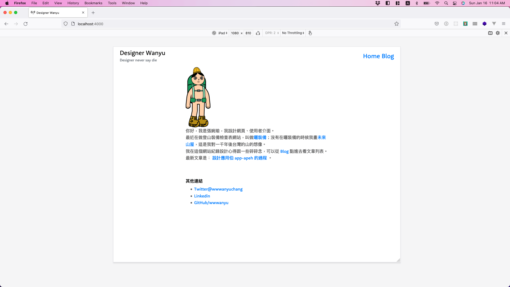
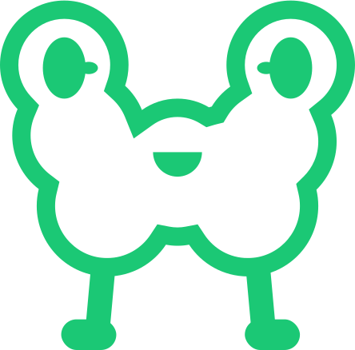
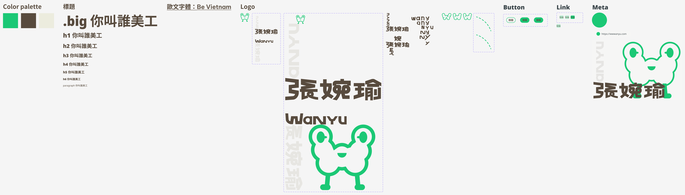
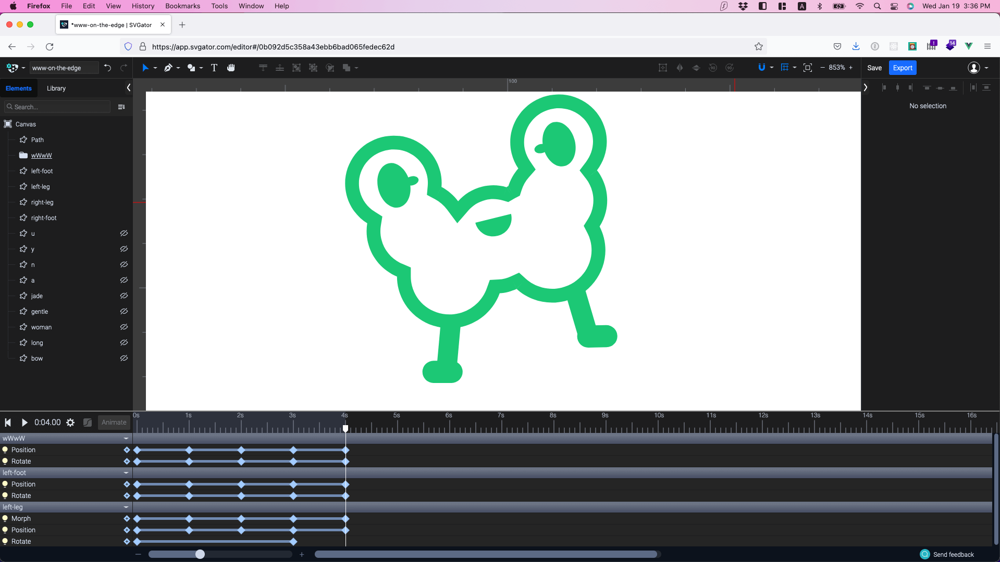
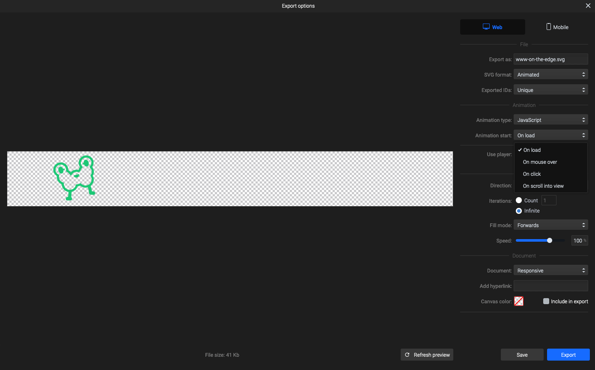

新年新設計的 wwwanyu.com
前情提要
上一版長這樣，看不順眼就改了起來。
標準字跟 Logo
這次加碼設計自己的標準字跟 Logo，這樣至少畫面還有些東西可以放。真的好不想放之前當社畜作的專案，都好爛啊…
總之這隻有腳的 W 形狀生物，這就是我的 Logo！
我覺得張的部首「弓」跟英文字母「Ｗ」旋轉角度的話形狀接近，就決定用這個角度梗來設計標準字。

Design guide
首次準備自己網站的 design guide，為什麼我之前不這樣做啊？我好奇怪 XD
Prototype
用 Figma 做出旋轉標準字的部分來感受一下，可惜 Figma prototype 不能直接用到網站上，no code 的時代到底什麼時候才要真的來呢？
Figma prototype 載入比較慢，但是他會出現的！可以點點看 prototype 版本。
實作
Logo W 的動態是用 SVGator 做的，我覺得 After Effect 太複雜，而且不是所有效果都能用 Lottie 輸出。但重點是我現在沒有訂閱 Adobe CC，跟本沒得用。
SVGator 可以短期訂閱而且沒有討厭的違約金，非常適合失業的人 🙈
翻找了文件老半天還是無法確定是否可以達到：在動作觸發前就有重複中的動態，點擊了後觸發另外一段動畫。
決定付費一個月，用用看就知道啦！
答案是：不行。
使用 SVGator 增加的互動行為的時間點限制在播放動畫，如果希望更靈活的觸發互動，還是要自己寫 JavaScript，或者是改用 gsap 那類型的框架吧。